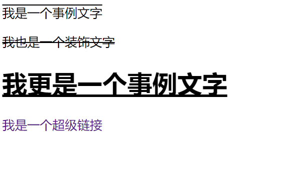
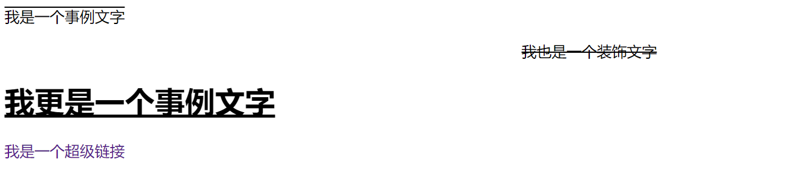
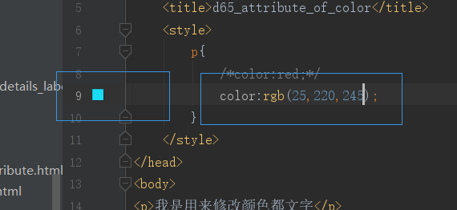
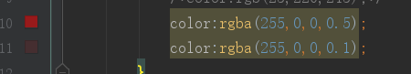

原文连接:https://www.cnblogs.com/ruigege0000/p/11080412.html
一、文本装饰的属性
1.格式：text-decoration:underline;
2.取值：
（1）underline代表下划线
（2）line-through代表删除线
（3）overline代表上划线
（4）none代表什么格式都没有（默认是这个属性）
注意：none的大多数用处在我们使用a标签的时候，可以用来去掉超级连接的下划线，可见下方演示
<head>
<meta charset="UTF-8">
<title>Title</title>
<style>
p{
text-decoration: line-through;
}
u{
text-decoration: overline;
}
h1{
text-decoration:underline;
}
a{
text-decoration: none;
}
</style>
</head>
<body>
<u>我是一个事例文字</u>
<p>我也是一个装饰文字</p>
<h1>我更是一个事例文字</h1>
<a href="https://www.baidu.com">我是一个超级链接</a>

3.快捷键
td代表text-decoration:none;
tdu代表text-decoration:undeiline;
tdl代表text-decoration:line-through;
tdo代表text-decoration:overline;
二、文本对齐的属性
1.格式：text-align:center;
2.取值：
（1）center代表居中
（2）right代表居右
（3）left代表居左
3.快捷键
ta代笔text-align:left;
tar代表text-align:right;
tac代表text-align:center;
总结：特殊的记住默认的值，平常的在记住属性值单词首字母。
三、文本缩进的属性
1.格式：text-indent:2em;
2.取值：
（1）3em代笔3个字符
（2）5px代表5个像素
3.快捷键：
ti代表text-indent:;
ti2e代表text-indent:2em;
<head>
<meta charset="UTF-8">
<title>d64_attribute_of_text</title>
<style>
p{
text-decoration: line-through;
text-align: center;
text-indent: 2em;
}
u{
text-decoration: overline;
text-align: right;
text-indent: 100px;
}
h1{
text-decoration:underline;
text-align: left;
}
a{
text-decoration: none;
}
</style>
</head>
<body>
<u>我是一个事例文字</u>
<p>我也是一个装饰文字</p>
<h1>我更是一个事例文字</h1>
<a href="https://www.baidu.com">我是一个超级链接</a>
</body>

四、颜色控制属性
1.格式：color:值;
2.取值：
（1）颜色英文单词
注：一般情况下常见的颜色都是由对应的英文单词，但是英文单词能够表达的颜色是有限的，也就说不是所有的颜色都能够通过英文单词来表达
（2）RGB颜色选择器
注：红绿蓝三原色，格式：rgb（255，0，0）代表红色，里面的数字分别代表红绿蓝三原色各自的亮度，webstorm很智能，可以写代码时直接在旁边显示颜色。

（3）RGBA颜色选择器
注：CSS3才推出来的一种格式，其中最后的字母a其实就是代表透明度，最大为1，最小为0，值越小越透明

（4）十六进制（后天再写）
（5）十六进制的缩写
五、源码：
d64_attribute_of_text
d65_attribute_of_color
地址:
https://github.com/ruigege66/HTML_learning
2.CSDN：https://blog.csdn.net/weixin_44630050（心悦君兮君不知-睿）
3.博客园：https://www.cnblogs.com/ruigege0000/
4.欢迎关注微信公众号：傅里叶变换，后台回复“礼包”获取Java大数据学习视频礼包